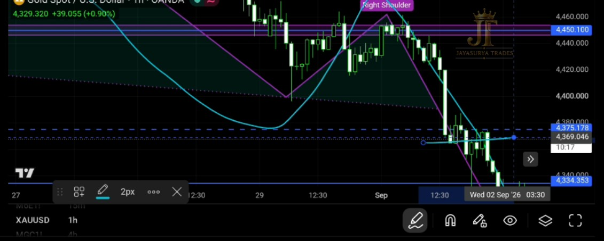
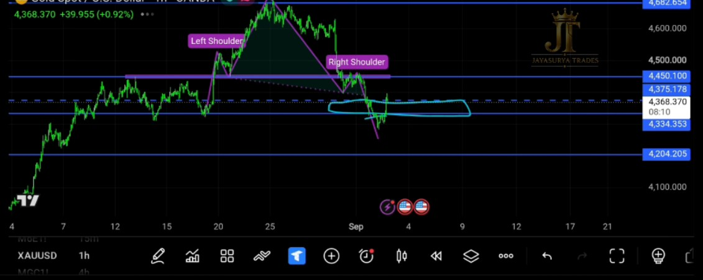
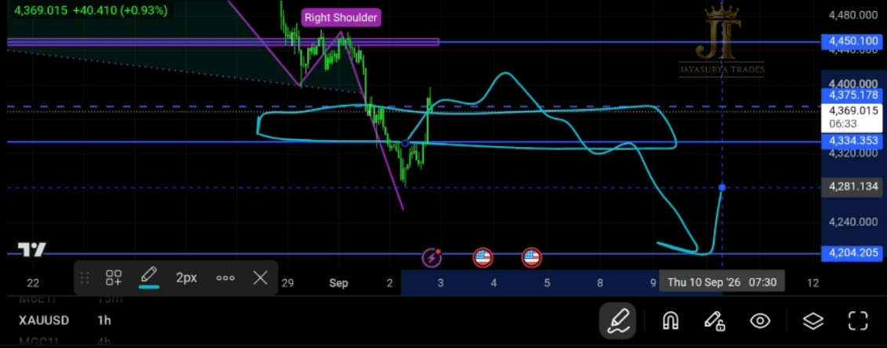

In yesterday's analysis, made on September 1, 2026 for September 2, I confirmed that the Head and Shoulders pattern had broken downward and that the market had shifted into a downtrend.
I also explained that aggressive traders could look for potential sell entries with a favourable risk-to-reward ratio while the bearish structure remained active, with 4204.205 identified as the next support to monitor if the downtrend continued.
Gold then moved sharply lower today. The important question for the next trading day is not whether the market has already fallen, but whether the current bearish structure remains intact or whether price provides a genuine confirmation of a change into a bullish trend.
Watch Today's XAUUSD Analysis

What Happened After Yesterday's Analysis?
Yesterday, I confirmed that the Head and Shoulders pattern had formed and broken downward. From a market-structure perspective, I considered that breakout an important confirmation that Gold had shifted into a downtrend.
I explained that aggressive traders could begin watching for sell entries with a good risk-to-reward ratio while the bearish structure remained active. I also identified 4204.205 as the next support level to monitor if the downtrend continued.
Today, Gold moved sharply lower in line with that bearish scenario. This follow-through strengthens the importance of continuing to respect the current market direction until price gives a clear confirmation that the structure has changed.
The market is still in a sell trend and has not yet confirmed a change into a buy trend.

The Market Is Still in a Downtrend
Looking at the current structure, Gold is still in a sell trend. The market has not provided confirmation that it has changed into a buy trend.
Because the bearish structure remains active, my focus continues to be on potential sell-side opportunities with a disciplined risk-to-reward approach rather than assuming that the market has reversed simply because it has already moved lower.
Until the market provides a valid bullish confirmation, I am treating the existing downtrend as the active structure.
Crucial Zone for September 3
The zone discussed previously remains very important for the next trading day. The levels I am watching are:
The area between 4375.178 and 4334.358 remains a crucial reaction zone. How price behaves around this area can help determine whether the bearish structure continues or whether the market begins to show evidence of a genuine trend change.
This remains the crucial zone I am watching. The market is still bearish unless price provides the confirmation required for a bullish trend change.

Bearish Scenario
The Head and Shoulders pattern has already broken downward, and the market has followed through with a strong bearish move. As long as the current sell trend remains active and no bullish trend-change confirmation appears, the bearish side remains the scenario I am watching.
If Gold continues to move lower with the existing downtrend, the next support level I am watching is:
If bearish continuation develops, 4204.205 remains the next important support level to monitor.
What Would Change the Trend to Bullish?
At the moment, the market has not confirmed a change into a buy trend. The bullish confirmation I am watching is a candle close above 4450.100.
If the market moves above 4450.100 and makes a confirmed candle close above that level, I would treat that as confirmation that the trend is changing toward the buy side. Only after that confirmation would bullish entries come back into focus.
Confirmed candle close above 4450.100 → bullish trend change can come into focus.
How I Am Approaching Gold Tomorrow
For September 3, 2026, I am not trying to predict every movement. I am following the market structure and waiting for price to confirm whether the current bearish trend continues or whether a genuine bullish reversal develops.
- The Head and Shoulders breakdown has already been followed by a strong bearish move.
- The market remains in a sell trend at the time of this analysis.
- The 4375.178–4334.358 area remains the crucial zone I am watching.
- While the bearish structure remains active, sell-side opportunities with a good risk-to-reward ratio remain the primary focus.
- If the downtrend continues, 4204.205 is the next support level to monitor.
- A confirmed candle close above 4450.100 is the condition I am watching for a possible change into a bullish trend.
- Only after that bullish confirmation would buy entries come back into focus.
The objective is to stay aligned with the active structure rather than forcing a reversal before the market confirms it.
Trade with the trend.
Respect the level.
Wait for confirmation.
Let the market prove the change.
Key Takeaways
- Yesterday's Head and Shoulders breakdown was followed by a strong bearish move in Gold.
- The market remains in a downtrend / sell trend and has not yet confirmed a bullish trend change.
- 4375.178–4334.358 remains the crucial reaction zone.
- While the bearish structure remains intact, the focus remains on disciplined sell-side opportunities with a favourable risk-to-reward ratio.
- If bearish continuation develops, 4204.205 is the next support level to monitor.
- A confirmed candle close above 4450.100 would be the signal I am watching for a possible change toward a buy trend.
- Buy-side opportunities come back into focus only after the required bullish confirmation.
Trade with the trend.
Respect the level.
Wait for confirmation.
Let the market prove the change.
Risk Disclaimer
This analysis is provided for educational and informational purposes only and should not be considered financial advice or a recommendation to buy or sell any financial instrument. Trading involves substantial risk. Always conduct your own research and follow your own trading plan and risk-management rules.